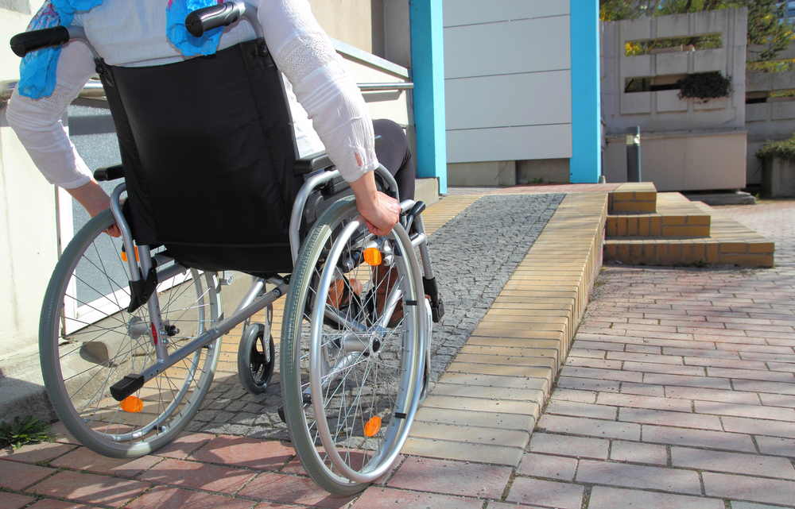
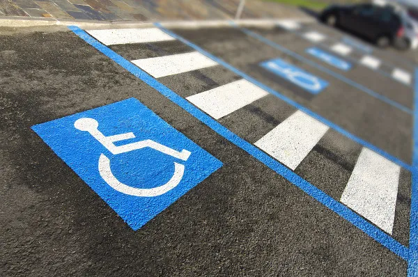

O que é acessibilidade
Para quem ainda não sabe ao certo o que vem a ser a acessibilidade, ela nada mais é do que um conjunto de medidas voltadas a garantir que haja a possibilidade de acesso a um ou mais lugares para pessoas que possuam necessidades especiais. A acessibilidade deve cuidar para que as pessoas com necessidades especiais consigam não apenas acessar lugares, mas também consigam se adaptar às suas condições, possibilitando, entre outras coisas, que estas pessoas consigam romper barreiras importantes para suas vidas. Atualmente, a acessibilidade interfere na arquitetura e também no urbanismo, se colocando como parte importante e integrante destas duas áreas, e surgindo como um ponto importante que jamais deve ser deixado de lado em qualquer obra atual.
Exemplos de acessibilidades
Rampa para cadeirantes
Vagas especiais
Braille nos ônibus